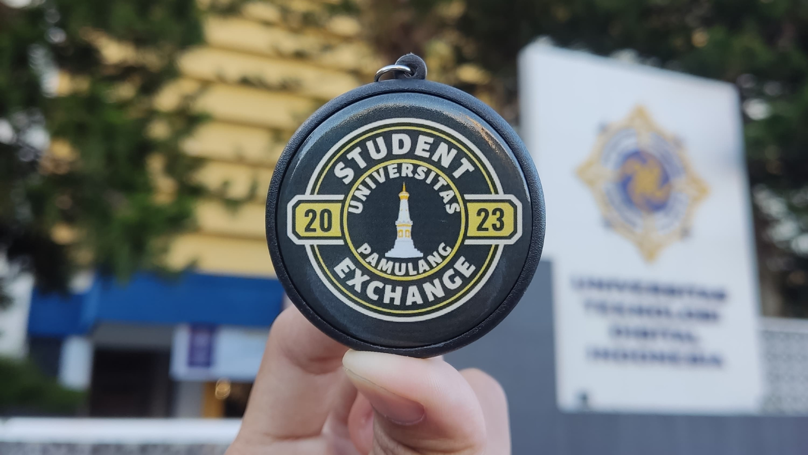

Home
Halo...
Perkenalkan, saya Khairul Akmal, kalian bisa memanggil saya Akmal. Saat ini saya sedang berkuliah di Universitas Pamulang jurusan Teknik Informatika dan sudah memasuki semester 6. Disini, saya ingin berbagi cerita tentang pengalaman saya selama menjalani program Pertukaran Mahasiswa Merdeka yang dilakukan pada saat semester 5 di Universitas Teknologi Digital Indonesia, Yogyakarta.
Selama satu semester kemarin, saya diberi kesempatan untuk menjalani program Pertukaran Mahasiswa Merdeka di UTDI. Pengalaman ini tidak hanya memberi saya kesempatan untuk meningkatkan pengetahuan akademis saya, tetapi juga menambah pengetahuan saya pada budaya, bahasa, dan cara hidup mandiri.
Di wesite ini, saya akan berbagi kisah-kisah seru tentang petualangan saya, tantangan yang saya hadapi, serta pembelajaran berharga yang saya dapatkan selama menjalani program pertukaran.